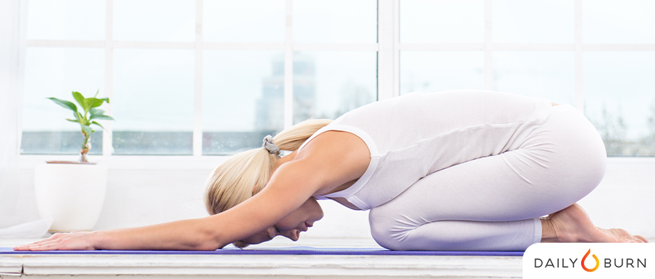
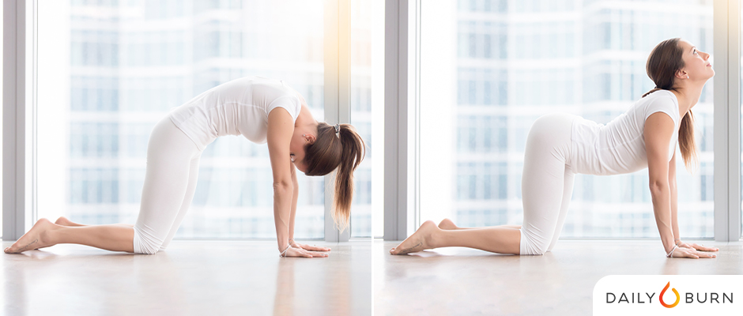
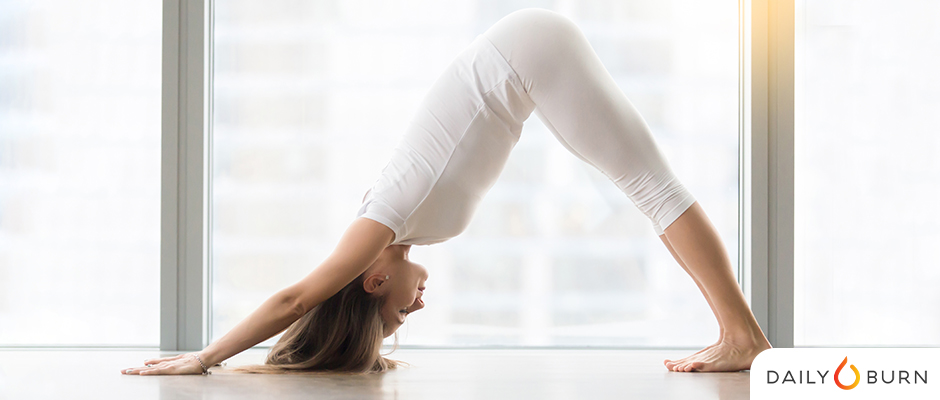
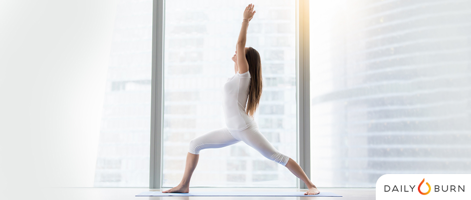
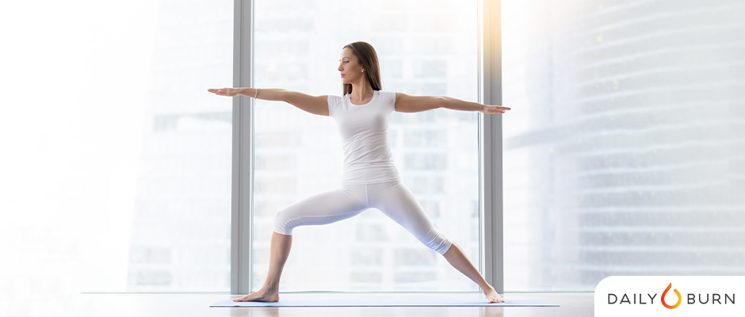

Basic Yoga Positions for Begineers
Mountain Pose (Tadasana)
This two-footed stance is the foundation for many other positions that require awareness and balance.
It is through this pose that one finds the proper alignment and shape for additional movements.

Stand with feet together and arms at your side.
Ground your feet, straighten your legs, tuck your tailbone in.
As you inhale elongate through your torso and extend your arms up.
Exhale and release your shoulder blades away from your head, toward the back
of your waist as you release arms back to your sides.
Child's Pose (Balasana)
Consider this your reset moment. Its great place to take a breather during class.
Simple in design, this easy pose relaxes your nervous system.

Start in kneeling position with toes tucked under.
Lower your butt towards your feet as you stretch your upper body forward and down wtih arms
extended.
Your stomach should be comfortably resting on thighs, with forehead touching the mat.
Cat/Cow Pose (Marjaryasana to Bitilasana)
A great way to warm up your back, explains Ingber, and get your body ready for downward-facing dog.
It also helps address mobility and work your core without extra stress on your wrists and shoulders.

Begin with hands and kness on the floor, spine neutral and abs engaged. Take a big inhale, then, as
you exhale, round your spine
up towards the ceiling and tuck your chin towards your chest, releasing your neck. On the next
inhale, arch your back and relax your abs.
Lift your head and tailbone upwards, beign careful not to place any pressure on your neck by moving
too quickly.
Downward-Facing Dog (Adho Mukha Svanansana)
One of the most reconizable poses of the bunch, Down dog is a great way to stretch your back, shoulders, arms
and hamstrings.
And it gets you calm and centered, too.

Come onto hands and knees with palms just past your shoulder, fingers pointing forwards.
Knees should be under your hips and toes tucked.
Lift your hips and press back into a V-shape position with your body.
Feet should be hip-width apart. Keep in mind, it’s OK if you can’t get your feet to the floor (your
hamstrings might be too tight).
Spread through all 10 fingers and toes and move your chest towards your legs.
Warrior I (Virabhadrasana I)
The first in the Warrior series, this pose strengthens your legs and opens your hips and chest, while also
stretching your arms and legs.
While holding this exercise, you’ll see an increase in your concentration and balance — both essential
qualities to carry through a yoga practice.

Start in mountain pose. As you exhale, step your left foot back about four feet, so you’re in a
lunge position with the right ankle over the right knee.
Raise your arms straight overhead, biceps by ears, and turn your left foot about 90 degrees to face
the left wall. Align your left heel perpendicular with your right heel.
Expand your chest and pull your shoulders back, then lower down toward the floor as you lift your
arms up. Make sure your hips stay square to the front, as you continue to breathe.
Warrior II (Virabhadrasana II)
Similar to Warrior I, Warrior II offers just a slight variation, with your upper body rotated to the side
instead of facing forward.
You’ll still reap the same quad-strengthening benefits of Warrior I, but you’ll also open up your hip flexor
muscles for greater flexibility.

Begin in mountain pose. Exhale and step your left foot back about four feet, making sure the heels
are in line.
Turn your back foot 90 degrees so that it’s now perpendicular with the front one.
Raise your arms to shoulder height, parallel to floor, with your right arm in front of you, and left
arm behind.
Bend your front knee so it’s directly over ankle and sink hips low until the front thigh is parallel
to floor.
Look straight ahead, eyes in line with your front-facing arm.